Open circuit
The path is broken—a loose wire, a switch that is off, a component in the wrong breadboard row. No current flows.
Tangible interaction
The electrical ideas, components, and workshop skills you need to connect sensors, lights, and motors to an Arduino—and to turn a breadboard test into an object that survives being handled.
Chapter 1 · Electricity fundamentals · 1.1
Electricity is the movement of electric charge through a conductor. Picture water in a pipe: four quantities describe what happens.
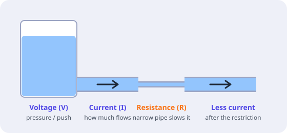
Remember: voltage is measured between two points; current flows through a component. A battery has voltage even when nothing is connected, but no current flows until the circuit is closed.
1.2 · Electricity fundamentals
Ohm's law links voltage, current, and
resistance: V = I × R. If you know two values,
you can calculate the third. The
power law tells you how much energy a part
handles: P = V × I.
5 V − 2 V = 3 V.
R = V ÷ I = 3 V ÷ 0.02 A = 150 Ω. Choose the
next common value above it:
220 Ω.
P = 3 V × 0.014 A ≈ 0.04 W—far below the 0.25 W
a standard resistor can handle.
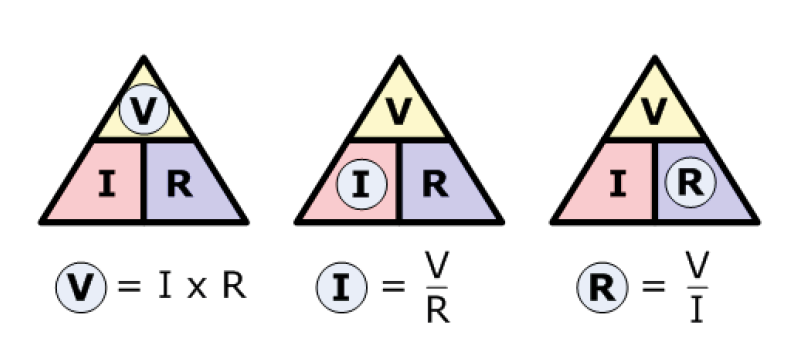
Try it: calculate the resistor for a blue LED (about 3 V) at 15 mA on a 5 V pin. Then check your answer against the nearest common value.
1.3 · Electricity fundamentals
A circuit is a closed loop: current leaves the positive side of the source, passes through the components, and returns to the negative side. Break the loop anywhere and everything stops.
Direct current (DC) flows in one direction at a steady voltage: batteries, USB, and Arduino all use DC. Alternating current (AC) changes direction many times per second: it is what comes out of a wall socket. In this module we only work with low-voltage DC.
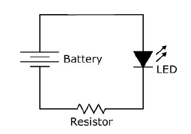
The path is broken—a loose wire, a switch that is off, a component in the wrong breadboard row. No current flows.
+ connects to GND with almost no resistance. A very large current flows and can damage the board, the USB port, or a battery. Always avoid it.
Before powering: trace the loop with your finger from 5 V, through each component, back to GND. If you reach GND without passing through a resistor or a load, you have found a short circuit.
1.4 · Electricity fundamentals
Ground is the reference point of a circuit: the point we call 0 V. Every other voltage is measured relative to it. On an Arduino, all the pins labelled GND are connected together.
When a project uses more than one power source—for example, the Arduino on USB and an LED strip on a 5 V adapter—their grounds must be connected. Without a common ground, the Arduino's signal has no shared reference, and the strip or motor driver may behave randomly or not at all.
Join the grounds, never the positive lines of two different supplies.
1.5 · Electricity fundamentals
Components can be connected in two basic ways: one after another, or side by side. The way you connect them decides how the voltage and the current are shared.
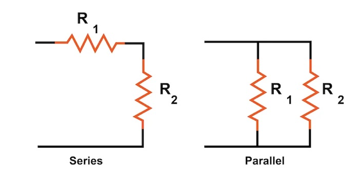
Components one after another, in a single path. The
same current flows through all of them; the
voltage is shared between them. Resistances
add up: R = R1 + R2.
Think: an LED and its resistor. If one fails, the loop is broken.
Components side by side, each on its own branch. All get the same voltage; the current splits between branches and adds up at the source.
Think: several LEDs, each with its own resistor, all fed from 5 V.
Parallel branches add load: ten LEDs at 15 mA each draw 150 mA from the supply. Always add up the current before choosing how to power a project.
1.6 · Electricity fundamentals
Two resistors in series between a voltage and GND split that voltage. The point between them gives an output that depends on the ratio of the two resistances.
Vin ── R1 ──┬── R2 ── GND
│
Vout = Vin × R2 ÷ (R1 + R2)
Example: 5 V, R1 = 10 kΩ, R2 = 10 kΩ → Vout = 2.5 VThe divider is the basis of many inputs. A potentiometer is a divider whose middle point moves when you turn the knob. An LDR or a force sensor replaces one of the resistors, so Vout changes with light or pressure—and Arduino can read that voltage on an analog pin.
Dividers are for signals, not for powering things: as soon as a load draws current from Vout, the voltage drops.
1.7 · Electricity fundamentals
A digital input connected to nothing is floating: it picks up electrical noise and reads random HIGH and LOW values. A pull resistor gives the input a defined state when the button is not pressed.
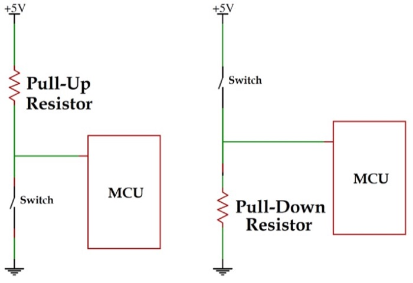
10 kΩ from the pin to 5 V; the switch connects the pin to GND.
Reads HIGH at rest and LOW when
pressed. Arduino has internal pull-ups you can switch on with
INPUT_PULLUP.
10 kΩ from the pin to GND; the switch connects the pin to 5 V.
Reads LOW at rest and HIGH when
pressed.
1.8 · Electricity fundamentals
A digital HIGH is not the same voltage on every board. The Arduino Uno uses 5 V logic; the MKR WiFi 1010, the RC522 RFID reader, and many modern sensors use 3.3 V logic.
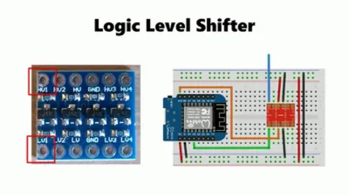
1.9 · Electricity fundamentals
The voltages we use are safe to touch, but mistakes can still damage components, your computer's USB port, or a battery. Good habits prevent most problems.
Chapter 2 · Electronic components · 2.1
Every interactive object follows the same chain. A sensor detects something in the world, a controller (the Arduino) decides what it means, and an actuator acts: it lights, moves, or sounds. The other components in this chapter make that chain safe and reliable.
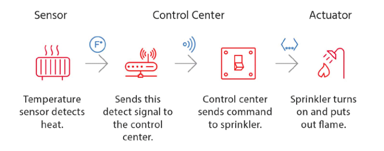
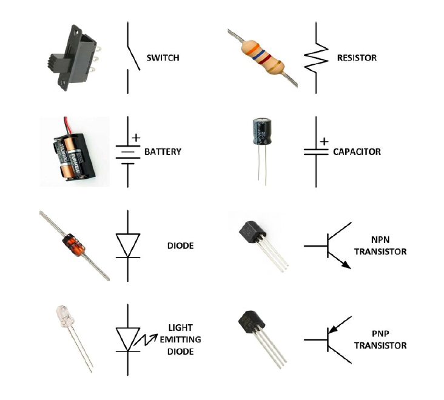
2.2 · Electronic components
A resistor limits current. It protects LEDs, sets reference voltages in dividers, and keeps inputs in a defined state. Resistors have no polarity: they work in either direction.
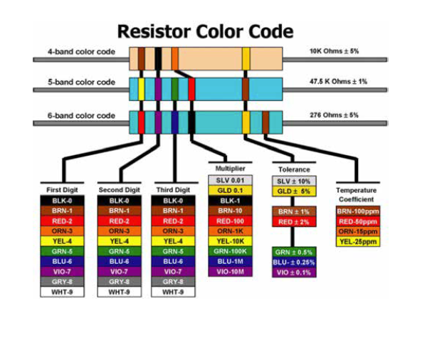
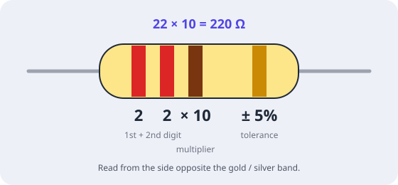
Not sure about the colours? Measure the resistor with a multimeter. See the appendix for the values used most in this module.
2.3 · Electronic components
A potentiometer has three legs. The outer legs are the two ends of a fixed resistor; the middle leg (the wiper) slides along it. Connect the outer legs to 5 V and GND, and the wiper gives a voltage between 0 V and 5 V depending on the knob position.
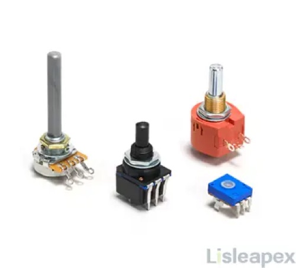
Knobs and faders work the same way. Choose by the gesture you want: turning or sliding.
Linear (often marked “B”) changes evenly. Logarithmic (“A”) is designed for audio volume. Use linear for sensors.
Tiny potentiometers adjusted with a screwdriver, used to set a value once—like the sensitivity of a sound module.
LDRs (light), FSRs (force), and flex sensors are resistors that change with the world. Read them in a voltage divider.
2.4 · Electronic components
An LED (light-emitting diode) only lets current flow in one direction. Connected backwards it simply stays off, so turn it round and try again. Connected without a resistor, it burns out.
Each colour needs a different forward voltage to light up. Use it in Ohm's law to size the resistor.
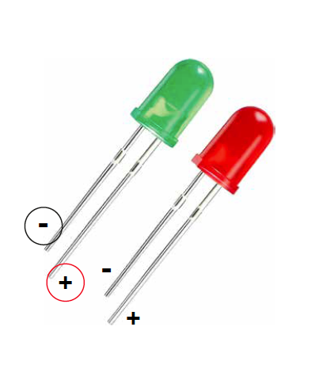
| LED colour | Typical forward voltage | Resistor on 5 V (≈ 15 mA) |
|---|---|---|
| Red, yellow | ≈ 2.0 V | 220 Ω |
| Green | 2.1–3.0 V | 150–220 Ω |
| Blue, white | ≈ 3.0–3.2 V | 100–150 Ω |
An RGB LED contains a red, a green, and a blue LED in one package, with four legs. Each colour needs its own resistor and its own PWM pin.
The long leg goes to GND. A colour lights up when its pin is HIGH.
The long leg goes to 5 V. A colour lights up
when its pin is LOW, so the logic is inverted:
analogWrite(pin, 255 - value).
2.5 · Electronic components
A capacitor stores a small amount of charge and releases it quickly. In our projects it acts as a tiny local reservoir that smooths the power supply when a component suddenly demands more current.
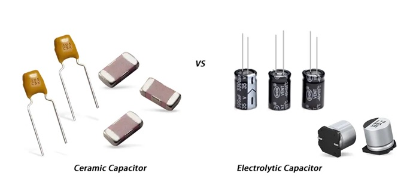
Small, no polarity. A 100 nF ceramic next to a chip's power pins (decoupling) filters fast noise.
Cylindrical, larger values (µF), polarised: the stripe marks the negative leg. Used for smoothing, like the 1000 µF capacitor across an LED strip's power.
Respect an electrolytic capacitor's polarity and voltage rating (choose one rated above your supply voltage). Reversed or overloaded, it can bulge or burst.
2.6 · Electronic components
A diode lets current flow in only one direction, from anode to cathode. The stripe on the body marks the cathode.
Motors, relays, and solenoids are coils. When they switch off, the coil produces a voltage spike that can destroy the transistor driving it. A flyback diode (such as a 1N4007) connected across the coil, with its stripe towards +, gives that spike a safe path.
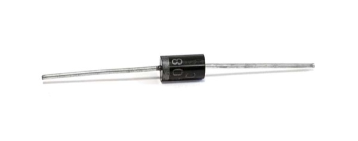
2.7 · Electronic components
An Arduino pin can only supply a few milliamperes. A transistor works as an electronic switch: a small signal from the pin controls a much larger current from another supply—enough for a motor, a lamp, or a long LED strip.
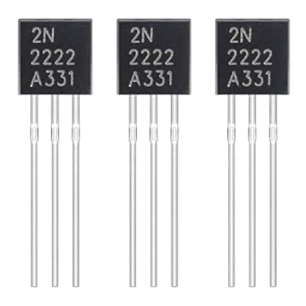
Small transistor for loads up to a few hundred mA. Pin → 1 kΩ → base; load between + and collector; emitter → GND.
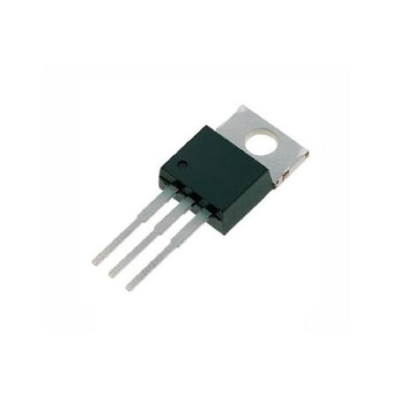
Handles larger currents, but loses 1–2 V and gets warm. Wired like an NPN.
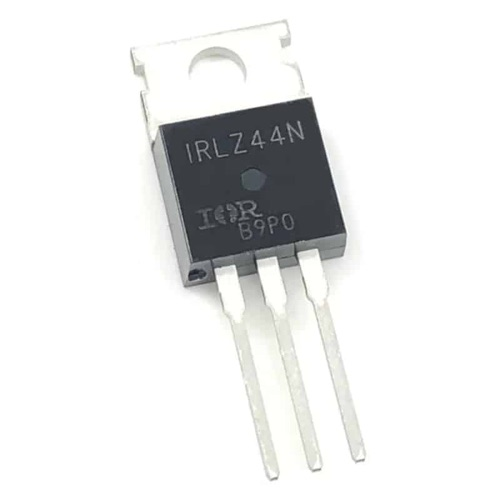
A logic-level MOSFET switches big loads efficiently from a 5 V pin. Pin → 220 Ω → gate, plus 10 kΩ from gate to GND.
Load (motor, lamp, strip)
+ ── external supply +
− ── collector / drain
emitter / source ── GND (shared with Arduino GND)
Arduino pin ── resistor ── base / gate
Coils only: flyback diode across the load, stripe to +Pin order differs between models. Always check the datasheet pinout before wiring. For direction control of DC motors, use an H-bridge driver—see DC motors in the Arduino guide.
2.8 · Electronic components
A relay is a switch moved by an electromagnet. Because the coil and the switch contacts are physically separate, it provides isolation: a low-voltage Arduino circuit can switch a completely separate circuit, such as a 12 V lamp or a pump.
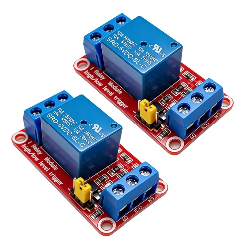
2.9 · Electronic components
A switch opens or closes a circuit mechanically. Choose it for the gesture you want: a quick press, a position that stays, or an object that is detected without being touched.
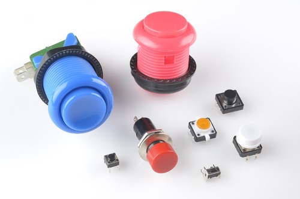
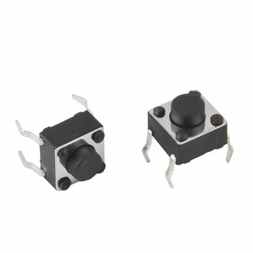
Only closed while pressed. The small four-leg breadboard button has its legs connected in pairs: place it across the central gap.
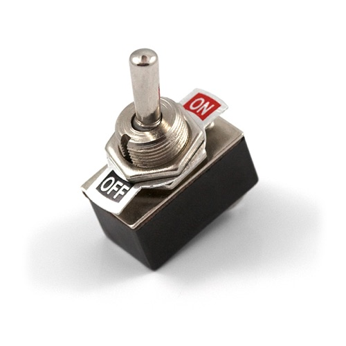
Stays in the position you leave it: on/off switches, slide switches, rocker switches.
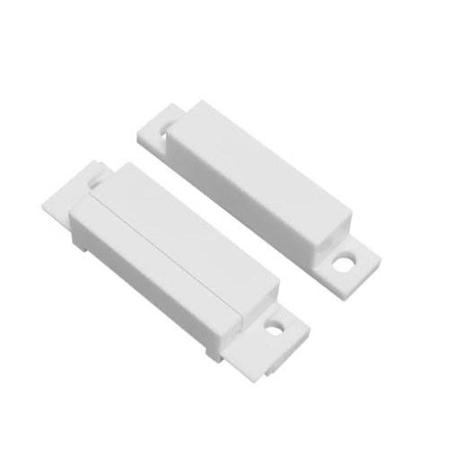
Closes when a magnet comes near. Perfect for detecting a lid, a door, or a hidden object.
Every switch needs a pull-up or pull-down to give a clean reading.
2.10 · Electronic components
Every project needs a source of energy. While developing, USB is enough; for the final object, choose a supply or battery that matches the voltage and current your parts need.
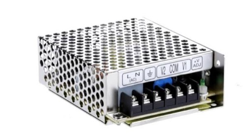
5 V and about 500 mA from a computer. Ideal while developing.
AA packs, LiPo cells, and power banks make objects portable. Capacity is measured in mAh.
5 V or 12 V adapters and enclosed supplies rated in amperes, for LED strips and motors.
Convert one voltage into another: linear regulators, buck (step-down), and boost (step-up) converters.
The Arduino guide's Powering your project chapter covers batteries, supplies, regulators, and power budgets in detail.
2.11 · Electronic components
An integrated circuit (IC) is a complete circuit inside a chip: a microcontroller, a motor driver, an amplifier. A module or breakout board puts an IC on a small board with the extra components it needs and clearly labelled pins.
VCC/VIN
and GND) and signal pins (OUT,
SDA/SCL,
TX/RX…).
Chapter 3 · Prototyping and measuring · 3.1
A schematic shows how components are connected, not where they physically sit. It is the clearest way to understand and share a circuit.
5V or A0 connect
points that share the same name, even without a drawn line.
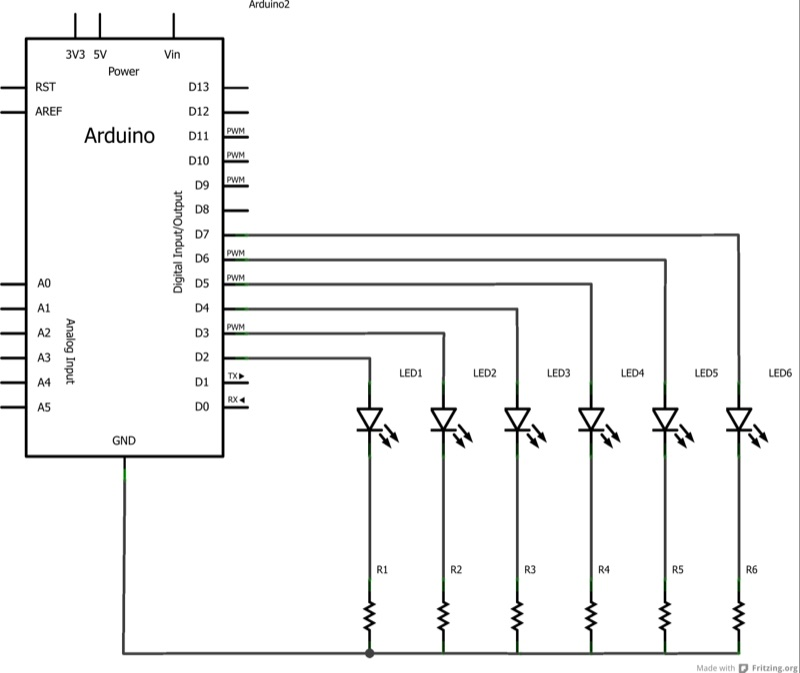
3.2 · Prototyping and measuring
A datasheet is the manufacturer's description of a component. It can be dozens of pages long, but you usually only need a few things.
Which leg or pin does what, seen from which side.
The supply range: 3.3 V only, 5 V, or 3–5.5 V.
What the part draws, and the most it can handle before it is damaged.
A recommended circuit, often with the exact resistor and capacitor values to use.
3.3 · Prototyping and measuring
A breadboard (protoboard) lets you build circuits without soldering. Metal strips inside connect certain holes; once you know which, wiring becomes predictable.
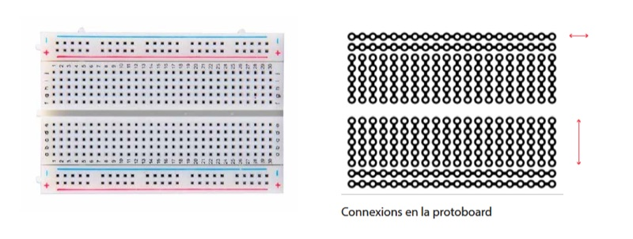
The long lines marked + (red) and − (blue) run along the edges. Connect 5V to + and GND to − once, then take power from anywhere along the rail. On some boards the rails are split in the middle.
In the central area, each short line of five holes is connected. Two legs in the same row are joined; legs in different rows are not.
Separates the two halves. Place buttons and chips across it so their pins are not short-circuited together.
Common mistake: both legs of a component in the same row. They are then connected to each other, and the component is bypassed.
3.4 · Prototyping and measuring
Jumper wires come male–male (breadboard to Arduino), male–female, and female–female (for module pins). Pick a colour convention and keep it throughout the project.
| Colour | Use |
|---|---|
| Black or white | GND |
| Red | Power: 5 V, 3.3 V, or VIN |
| Other colours | Signals: one colour per type, e.g. yellow for analog, blue for digital |
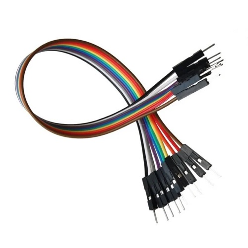
3.5 · Prototyping and measuring
A multimeter turns invisible problems into numbers. Turn the dial to choose what to measure, plug the black probe into COM, and the red probe into the right socket.
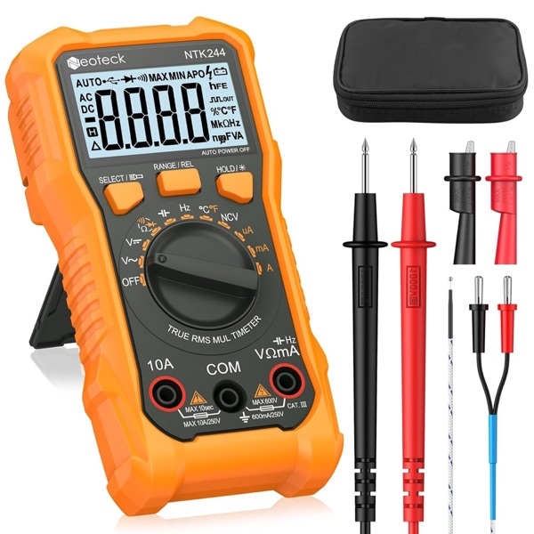
After measuring current, move the red probe back to VΩ. In the current socket the meter behaves like a wire, and touching it across a power supply causes a short circuit.
3.6 · Prototyping and measuring
Build Arduino circuits on a virtual breadboard and run the code in the browser. tinkercad.com/circuits
Simulator with many modules: LED strips, screens, servos, sensors. Projects can be shared with a link. wokwi.com
Draw breadboard views, schematics, and PCB layouts to document your project. fritzing.org
A simulator does not catch everything: real components have loose contacts, noise, and limited power. Always confirm on the real circuit.
3.7 · Prototyping and measuring
Check the hardware and the code separately. Change one thing at a time and test after each change.
Chapter 4 · Soldering and finishing · 4.1
A breadboard is perfect for testing, but its connections come loose as soon as an object is carried, shaken, or touched by visitors. Solder the parts of the circuit that already work, so the prototype becomes permanent and reliable.
4.2 · Soldering and finishing
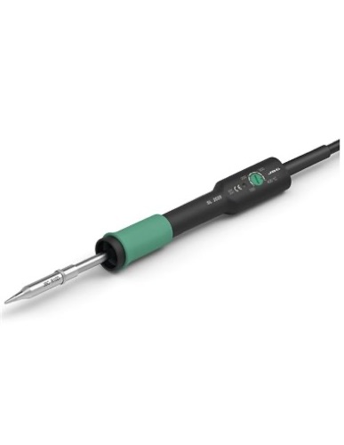
A station with temperature control is easier to use. Work at about 330–370 °C. A medium chisel or conical tip suits most jobs; keep it tinned and clean.
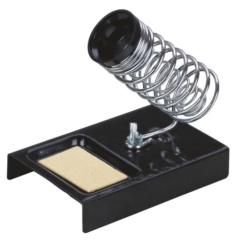
Holds the hot iron safely between joints. Always return the iron to it.
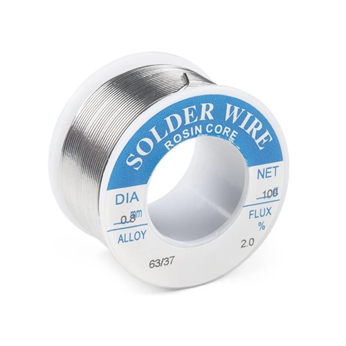
Lead-free solder is the standard; it needs slightly higher temperatures. 60/40 tin-lead flows more easily but contains lead.
Cleans the metal so solder flows. Most solder wire has a flux core; extra flux helps with difficult joints.
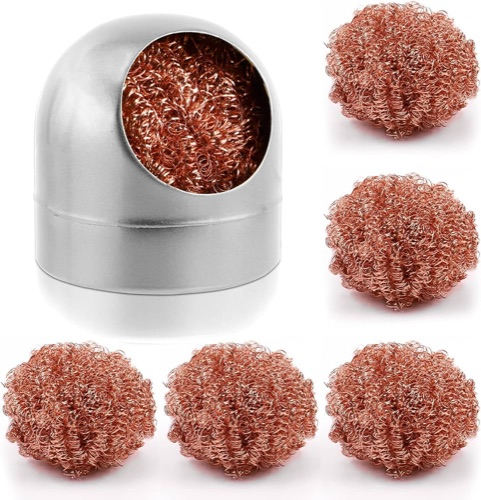
Cleans the tip without cooling it as much as a wet sponge.
Clips hold the board and wires steady; a small extractor fan pulls flux smoke away from your face.
Wire strippers, flush cutters, tweezers, and heat-shrink tubing.
4.3 · Soldering and finishing
4.4 · Soldering and finishing
| Step | Action | How |
|---|---|---|
| 1 | Tin the tip | Melt a little solder on the clean, hot tip so it conducts heat well. |
| 2 | Heat both | Touch the tip to the pad and the lead at the same time for 1–2 seconds. |
| 3 | Feed solder | Touch the solder to the joint—not to the iron—and let it flow around the lead. |
| 4 | Remove | Take the solder away first, then the iron. Do not move the parts while it cools. |
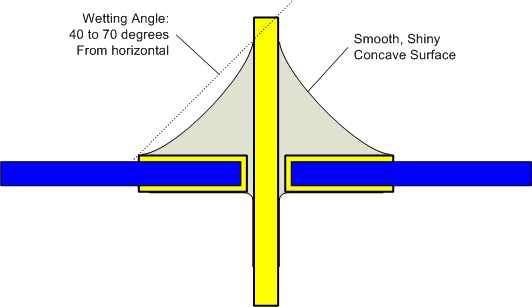
4.5 · Soldering and finishing
Push the header's long pins into a breadboard, place the module on top, and solder. The breadboard keeps the pins straight. Solder one pin first, check the alignment, then do the rest.
4.6 · Soldering and finishing
A grid of separate pads. You make every connection with solder bridges or wire. Flexible, but slower.
Pads joined in copper strips, like a breadboard row. Cut a strip with a drill bit where you need a break.
A perfboard shaped to plug on top of an Arduino Uno, with 5 V and GND already available.
Plan the layout on paper with the board's grid before you solder, and mark where strips must be cut.
4.7 · Soldering and finishing
Most problems in a soldered circuit come from a few typical bad joints. Learn to recognise them by their shape and shine, and redo them before you close the object.
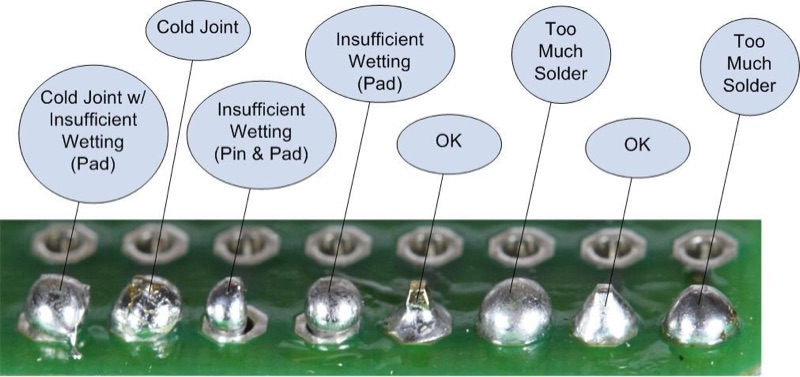
Dull, grainy, or lumpy. The parts were not hot enough. Reheat and add a little flux.
Solder sits on the pin or pad without flowing onto both. Heat both surfaces at the same time.
Solder joins two neighbouring pads. Drag it away with a clean tip.
A round ball that may hide a bad connection.
Too much heat or force peels the copper off the board. Work quickly and do not pull leads.
LEDs, sensors, and plastic connectors can melt. Limit contact to a few seconds.
Appendix 1
0 black 1 brown 2 red 3 orange 4 yellow
5 green 6 blue 7 violet 8 grey 9 white
Tolerance: gold ±5% silver ±10% brown ±1%| Value | 4-band colours | Typical use in this module |
|---|---|---|
| 220 Ω | red · red · brown | Current-limiting resistor for an LED on 5 V |
| 330 Ω | orange · orange · brown | Data line of an addressable LED strip |
| 1 kΩ | brown · black · red | Transistor base; DFPlayer RX line |
| 10 kΩ | brown · black · orange | Pull-up / pull-down; FSR and LDR dividers; MOSFET gate pull-down |
| 100 kΩ | brown · black · yellow | LDR divider for bright spaces |
| 1 MΩ | brown · black · green | In parallel with a piezo knock sensor |
| Other common parts | Use |
|---|---|
| 100 nF ceramic capacitor | Decoupling next to a chip or module |
| 1000 µF electrolytic capacitor | Smoothing the power of an LED strip |
| 1N4007 diode | Flyback protection for motors and relays |
| 2N2222 / TIP120 / IRLZ44N | Switching loads larger than a pin can drive |
Appendix 2
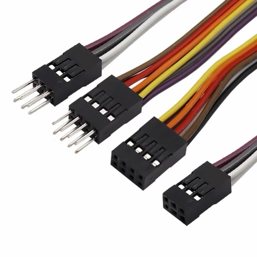
The connectors on jumper wires. Quick for modules, but they can slip off—glue or tape them in final objects.
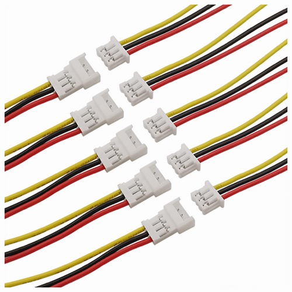
Small locking connectors, common on batteries and LED strips. Let you unplug parts without cutting wires.
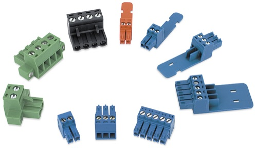
Clamp wires with a screw. Good for power and thicker wires.
Next: continue with Meet Arduino in the Arduino guide.